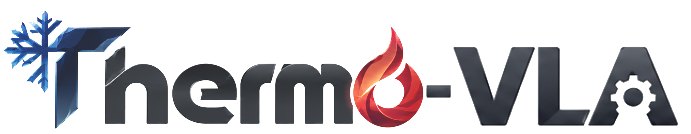

Thermal-aware robotic manipulation

Thermal-Aware Vision-Language-Action Models with Gated Residual Fusion for Robotic Manipulation
Jingxuan Chen, Junshi Luo, Chencheng Dong, Xiaojian Nie, Tongge Huang, Qiang Huang
Recent Vision–Language–Action (VLA) models have begun incorporating thermal sensing, but existing approaches typically treat thermal images as ordinary visual inputs, providing limited support for temperature-aware relational reasoning in manipulation. To address this limitation, we propose Thermo-VLA with a ThermoRes Encoder, which decomposes thermal images into cold and hot attribute representations and injects them into the RGB token through language-conditioned residual modulation, enabling temperature-driven target selection and continuous manipulation. We further construct six real-world robotic tasks on a dual-arm Unitree G1 platform, spanning basic grounding to relational reasoning. Experiments show that Thermo-VLA achieves an average success rate of 0.86 across four thermal-dependent tasks, outperforming a π0.5 baseline that directly incorporates RGB–thermal observations by 18 percentage points. Under unseen-object and scene variations, Thermo-VLA maintains an average success rate of 0.78, achieving the best generalisation performance among the compared methods. Beyond thermal sensing, we transfer the same residual modulation mechanism to colour attributes and observe consistent improvements in both simulation and real-robot experiments, indicating its potential to generalise beyond thermal attributes.